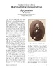

The Oesper Collections in the History of Chemistry, University of Cincinnati
Notes from the Oesper Collections
2013 issues
These occasional notes highlight items and topics of interest in the Oesper Collections in the History of Chemistry.
| Current Issue: Hofmann Demonstration Apparatus : Notes from the Oesper Collections, No. 19, March/April 2013 | |
|  | The 19th-century German chemist, August Wilhelm Hofmann (1818-1892), was famous for his designs of chemical demonstration apparatus. The Oesper Collections contain several surviving examples of these devices, though they have long since vanished from the chemistry lecture hall itself. |
 Notes from the Oesper Collections requires Adobe Acrobat Reader.
Notes from the Oesper Collections requires Adobe Acrobat Reader.